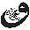

205. Bir şeyi diğerinden ayırdığında bir bölünme yaratırsın ve tüm bölünmeler bir bastırma oluşturur. Sen mutluluğu seçersin, mutsuzluğu bastırmış olursun. Bu senin tüm dengeni bozacaktır; çünkü ayrımı var eden zihindir ve zihin sürekli sana nedenler sunarak cevaplar aratacaktır. Sen cevaplar peşinde koşmaktan sevgiyi hissedemez olursun. Zihin aşkı bölecektir, o sevgiyi bölecektir. Zihin birliği kabul edemez, o mantıksaldır ve mutluluk mantığın zıt tarafındadır.
206. Kadın ve erkek ancak “bir”liğe ulaştıklarında varlıkları çiçek açar, o zaman kök ve gövde birleşerek ortaya çiçekleri çıkar, ben buna “sevgi çiçeği” diyorum. Şayet bir ilişkide sevgi çiçeği açmazsa o ilişki kurumaya mahkûm kalacaktır. O halde, ne seven ol ne de sevilen, sadece sevginin kendisi ol en derinden...
207. Senin enerjini düşüren insanların farkındasındır, onları kıramadığın için kendi kalbini kırıyorsun; sadece senin enerjini dengeleyen insanları seç yaşamına, bu yaşam senin buraya ilk ve son gelişin. O halde artık insanları kırmamak için yaşayan biri değil, önce kendi kalbini hoş tutan bir insan ol. Senin huzurunla onlar da mutlu olacaklardır.
208. Şimdi sımsıkı sar kendini. Bırak etrafındakiler ne derse desinler, isterlerse deli sanıp şaşkınlıkla baksınlar sana. Sen koca bir dünya olduğuna inandıkça onlar da sana inanacaktır...
209. Aşk arıyorsan sen dışarıda, kendi evinden uzaktasın demektir. Bu evin kapısının önünde durup da “Başımı sokacak bir ev var mı?” diye sormaktan farksızdır. Sen zaten evin önündesin, tek sorun dışarıda olmandır, senin sadece içeri girmen yeterlidir.
210. Evin kapıyı açmadan aşkı hissedemezsin. O halde önce içine yönel ve huzurun kapısını aç, tam o an tüm güzellikler içinden bir volkan gibi fışkıracaktır.
211. Zihnin ötesinde olan her yer bizim mutlak sevgi, huzur ve mutluluk alanımızdır.
212. Sen bugüne kadar hep ucuz olana alıştırıldın, nerede ucuz bir şey görsen ona ihtiyacın olmasa bile zihnin sahip olmak isteyecek. Ve bir görüşte, bir anda âşık olabiliyorsun, ancak dikkat etmelisin; bir anda başlayan aşk bir anda bitecektir! Çünkü sen farkında olmadan ucuz, sahte bir aşka tutundun. Her şeyi zihnin planladı! Sadece farkında ol, bu kâfidir.
213. Ayırt etmekten vazgeçmeni dilerim. Sadece olumluyu düşündüğünde olumsuz olana enerji vereceksin, onu çok daha büyük bir hale getireceksin, bu yüzden bütüne saygılı ol. Bırak bütün senin içine işlesin. Yavaş yavaş huzurun doruklarına ulaştığını göreceksin.
214. Sorun yaşamın içindeki olumsuzluklar değildir; sorun, senin oluşu serbest bırakmaman, onun akmasına izin vermemen, bir mıknatıs gibi ona yapışman, sahiplenmendir!
215. Sen bir şey umarsın, yaşam başka bir şey sunar, sonra sen üzülür, yıkılırsın... O zaman umutları bırak! Umutlar koşula bağlıdır, koşullar zamana ve zaman geçmeye mahkûmdur. “Umudunu kaybeden her şeyini kaybetmiştir” diye söylenen sözleri bir kenara bırak; çünkü umut sana her şeyini kaybettirdi ama hâlâ farkında değilsin! O, uzakta hoş görünen ufuk gibidir, yaklaştıkça elinden kaçar. O halde kulağını kapat, yüreğini aç ve yoluna devam et, bu yoldaki her şey senin hakikatindir.
216. Zihin her zaman mutsuzluğun tarafındadır, onu yakalar, mutluluğu ise görmene engel olur, bu zihnin en sevdiği oyunlardan biridir, bu oyunun farkına varman kâfidir.
217. İnsanın varlığı başlı başına bir başarıdır; çünkü o, milyonlarca sperma arasından ana rahmine düşmeyi başarmıştır. Ben bunun üzerine başka başarı göremiyorum!..
218. Hayat öyle garip bir yol arkadaşıdır ki, ona sıkıca sarılıp umutlar bağladığında değil, özgür bıraktığında sana mutluluğu sunar.
219. Zihin seni kullanıyorsa bu köleliktir şayet sen zihni kullanıyorsan bu “bilgelik”tir.
220. Ne zaman birisi sana hakaret etse, kalbini kırmak istese, ona sadece gülümse, bu, “Ben senin uzaktan kumandalı oyuncağın değilim” demektir.
221. Her haklı olma ihtiyacı hissettiğinde farkına varmanı isterim; ego senden doyum bekliyor!.. Ve hemen onu sustur; onu beslemeyeceğini kibarca söyle ve sevgiyle yerine oturt!
222. Varoluş mucizelerle dolu kilitli bir kapıdır, anahtar ise sensin!
223. Zihin sürekli erteler, yaşama kalbiyle bakan insan ise “sonsuz an”ın/“şimdi”nin huzuru içindedir. O halde daima anımsa! Bir şeyi ertelemek için içinden bir ses yükseliyorsa bu ses; zihnin sesidir ve hemen uyan...
224. Her çocuk bilge doğar, sonra toplum onu kulaktan dolma bilgilerle köle yapar!
225. Mutsuzluğa gülen insan bilgedir ve onun gülümsemesi hiç bitmez.
226. İnsanın önündeki en büyük engel kendi düşünceleridir.
227. Ağlayacaksan ağla, ardından gülümseme gelecektir ve güleceksen gül, ardından hüzün gelecektir. Gökyüzü bazen bulutlu, bazen açıktır ve deniz bazen dalgalı bazen dingindir. Varoluş bu şekilde dans eder.

228. Düşünceler enerjidir, duygular enerjidir, her şey enerjidir ve her şeyi yansıtan sensin. Her şey senden çıkar ve sana döner; o halde kişi idrak etmelidir ki, enerjinin kaynağı kendisidir.
229. Sen karanlıkla kaplıysan güneş seni aydınlatamaz. Sen aydınlık içindeysen karanlık sana direnemez. Aydınlık da sensin karanlık da, her şey sende başlar sende biter.
230. Gece rüyanda kâbus görüyorsun ve uyandığında, “Çok şükür bunların hepsi kâbusmuş” diyerek oh çekiyorsun. Gerçek hayatta da kâbus yaşıyorsun; fakat bunun bir rüya olduğunu sana kimse söylemediği için ıstırap çekiyorsun! Şayet bir kez bunu idrak edersen bu hayat senin huzurun olacaktır.
231. Ne zaman kendini kötü hissetsen “varoluş”la aranda bir uyum sorunu olduğunu göreceksin. Her şey üzerine üzerine geliyorsa belki de sen ters yoldasındır. Dışarıyı bırak, kaynağına dön ve tıkanıklığı izle. İzlemeye başladığın an çapaklar kalkacak ve nehir tekrar akmaya başlayacaktır.
232. Ben sadece acının içinde “mucize” görürüm. Tıpkı bir balığın kılçığını çıkarıp bir kenara bırakmak gibi... Gerisini reddettiğimden değil; o kılçığın benim için bir anlamı olmadığındandır.
233. Daha çok söyleyeceklerim var belki ama akıl idrak etmez diye susuyorum. Sen sadece kalbini açık tut, kelimelerin ötesinde yüreğine akan bir nehir vardır ki, o sözlerin karanlığında değil, sadece sessizliğin aydınlığında görülür!
234. Her şeyin bir var olma sebebi vardır, şayet dikkat edersen gelen her duygunun seninle konuştuğuna şahit olursun. Onu dinle, ona kulak ver, ancak ona tutunma. O sadece senden anlaşılmayı bekliyor.
235. Bu dünya sana sıkıcı gelmeye başlar, Mars’ı, Ay’ı, Jüpiter’i keşfetmek istersin; bu dünya sana sıkıcı gelmeye başlar hemen bir aşk yaşamak istersin. Aslında sen sadece kendinden kaçıyorsun ve nereye gidersen git, zihin orada seninle birlikte olduğu sürece huzuru bulamazsın!
236. Tüm duyguların pozitif ve negatif yanı vardır. Sabır istersen bela peşinden gelecektir; onlar hiçbir zaman tek başına gezmezler. Lanet edersen öfke onu takip edecektir, Sağlık istersen hastalık onun yanından ayrılmayacaktır. Senin dışarıdan gelecek hiçbir duyguya ihtiyacın yoktur, sadece kaynağına dön ve dünyaya sevgi tohumları ek, ancak o zaman barış ve huzur el ele olacaktır.
237. Şayet dikkat edersen kelimelerin içi boştur, onları sen kendi fikirlerinle doldurursun. Bu yüzden kelimeler benden her zaman çekinmiştir; çünkü onlar bugüne kadar beni incitemediler, hiçbir zaman onların esiri olmadım!
238. İnsan acı durumda bile farkındalığını kaybetmemelidir. Senin lanetin düşmanının istediği şeydir; bu onun besinidir, yayacağın sevgi enerjisi ise onun üzüntüsü, onun eriyişi olacaktır.
239. Hayat sadece kendi araştırmanla, kendi deneyiminle daha yaşanılası bir hale gelir. Güzel ya da çirkin, iyi veya kötü, acı ve tatlı... Bunlar hayatın görünmez bedeninden birer parçadır. Parçaları bıraktığın an kendini bütünün içinde bulursun ve bütün senin özünün en derindeki parçasıdır. Bütünü bulan kendini bulmuş demektir.
240. İnsanlar küçük düşler kurdukları için küçük şeyler elde ederler, ne kadar büyük düşler kurarsan o kadar büyük enerji yaratırsın.
Unutma! Düş, senin varoluşla arandaki gizli köprüdür.

241. Huzursuz olan sen değilsin, huzursuz olan zihnin kendisidir ve sen kendini zihinle özdeşleştiriyorsun, zihnin senden bir parça olduğunu düşünüyorsun. Oysa zihin bir kalp ya da bir böbrek gibi organ bile değildir, o sadece düşüncelerin yuvası, bir enerji alanıdır. Onun ötesinde ise öz vardır, oraya bir kez ulaştığında mutlak huzurun içine düşersin.
242. Yaşamdan tat alamıyorsan kendi yaratıcılığından habersiz, başkasının çizdiği resmin üzerinde çalışıyorsun demektir. O resim sana hiçbir zaman kendi çizdiğin resim gibi haz veremez, hatta gün geçtikçe sıkılmaya, boğulmaya başlarsın. O halde şimdi çöpün kapağını aç ve resmi çöpe at, elini kalbine götür; Allah’ın verdiği düşselliğini ve sezgini kullanarak resmini çizmeye başla. Bu resim senin, keyfini çıkar...
243. Bütün bu mutsuzluğun nasıl ortaya çıktığını hiç düşündün mü? Huzursuzluk, senin yaşamdan beklentilerin, arzuların ile yaşamın sana sunduklarının uyuşmamasından doğarlar. Bir arzuya tutunduğun an huzursuzluk için zemin hazırladın demektir. Sadece işleyişin farkına varmanı isterim, bu farkındalık aydınlığın olacaktır.
244. Güzel bir güne mi başlamak istiyorsun?
O halde dinle! Varoluş senin niyetine, zihin ise bugüne engeller koymak için düşüncelerine bakar. Şayet düşüncelerin esiri olursan günün berbat geçecektir, niyetinin ne kadar derin ve güçlü olduğuna inanırsan mucizelerle dolu bir gün seninle olacaktır. O halde niyetin gücünün varlığından geldiğini unutma, onu her zaman önde tut. Varoluş güçlü enerjileri sever ve enerjiyi nereye aktarırsan orayı büyüteceksin.

245. Her şeyi bıraktığında her şey senindir. Şimdi bu sana ne ifade ediyor? “Her şeyi bırakırsam her şey nasıl benim olabilir?” diye soracaksın. O halde sana buzdağlarını anımsatmak isterim. Okyanusun bir köşesinde parçalara ayrılmış buzdağlarını... Ve bir buzdağı her zaman okyanusta parça halindedir, şayet o erirse, okyanusla birleşecek ve artık okyanusun kendisi olacaktır. Bundan sonra ona buzdağı diyemezsin, o okyanus olmuştur. O tamamen erimiş ve bütüne karışmıştır; bütünün kendisi, her şey demektir!
246. Zihin her zaman mutsuzluğun tarafındadır, onu yakalar, mutluluğu ise görmene engel olur, bu zihnin en sevdiği oyunlardan biridir, bu oyunun farkına varman kâfidir.
247. İnsanın kendini mutsuz hissetmesi, kapalı bir havada güneşi yok sayması gibidir, oysa sadece ışığın önüne geçici olarak kara bir perde geçmiştir.
248. Kendini biraz izlemeni isterim, ilk adım kendi içine, sonraki adım diğerinin içine akmaktır. Ve o zaman “bir” doğar.
249. Acı geldiğinde izin ver içine girsin, tüm hücrelerine kadar işlesin, onunla ilgilenme, onu rahat bırak; çünkü sen onu rahat bıraktığın an düşünceler artık yüz bulamayacak, sıkılmaya başlayacaktır, bir daha seni ziyaret etmek istemeyeceklerdir. Bunu devamlı tekrar et, mucizene şaşıracaksın.
250. Dünyada iz bırakan insanlar ölmezler, onların sadece bedenleri burada değildir.
251. Anlamak zihinsel bir eylemdir, anlamak egonun ince oyunlarından biridir. Ne zaman bir şeyi anlamaya çalışsan kendini şimdiki sonsuz anın dışında bulursun. Artık yaşam ellerinin arasından kayıp gitmiştir. Sen bu dünyayı anlamaya değil, onu hissederek yaşamaya geldin. Onu her damlasına kadar iç, kendini nihai bir huzurun içinde bulacaksın.
252. Arzular zihnin en çok kullandığı yemlerden biridir, mutsuzluğa zemin hazırlar; arzu yerine tüm kalbinle niyet etmek büyük bir ferahı peşinde getirir.
253. İnsanlar, “Nasıl mutlu olurum?” diye sorarlar. Fakat bu soru yanlış, bu soru seni zihin içine götüren, seni karıştıran, seni çıkmaza sokan bir sorudur! Önemli olan nasıl mutlu olacağın değil, senin nasıl bu hale geldiğin, mutsuzluğa nasıl izin verdiğindir. Şayet nasıl mutsuz olduğunun farkına varırsan bunu dönüştürebilirsin, o zaman öfkeyi kullanabilirsin. Eğer nasıl mutlu olacağına takılı kalırsan bataklığın içinde kaybolmaya mahkûm kalacaksın.
254. Hayat sadece bir yansıtıcı, beyaz bir perdedir, o senin içselliğini yansıtır!
255. İnsanlar her şeyi kadere yükler ve şunu asla unutma: Hataya neden olan kader değil, ahmaklığındır!
256. Hayat çok sadık bir gölgedir, o varlığının izini oluşturur. Sen içsel olarak mutluysan tüm dünyan mutlulukla dolar, şayet sen üzgün, öfkeliysen gölge bu şekilde oluşacaktır. Unutma! Kaynak hayat değildir, kaynak sensin; hayat sadece senin köklerinden var olur!
257. Ben dışarıdaki aydınlıkla ilgilenmiyorum. Şayet senin varlığından yükselen aydınlığı duyumsayabilirsen dışarısı da aydındır, senin aydınlığın bütün dünyaya ışık verecek kadar güçlü bir enerji yayar. Bu enerji gözle görülemeyecek kadar da kutsaldır!

258. Etraf negatif enerjilerle doludur, sürekli seni aşağıya, düşük enerjiye çekmek isteyen insanlarla birliktesin. Hatta bunlar senin en yakınların; kardeşin olabilir yahut eşin ya da baban olabilir... Ancak buna izin verme, kimsenin enerjini bölmesine izin verme, biraz farkında olursan yaşamında çok olumlu değişimlerle kucaklaşacaksın.
259. Yaşam üç nefestir. Onlardan biri geçmiş ve gelecek, diğeri ise şimdiki nefestir; ancak insan sadece şimdiki nefesin içinde var olabilir!
260. Önemli olan hayatın ne zaman son bulacağı değil, onu ne zaman hissederek yaşamaya başladığındır. Bizim yolumuz budur.
261. Reddettiklerini beslersin, onları güçlendirirsin, teslim olduğunda huzur çiçekleri açar, artık güneş doğmuştur, karanlık bulutlar yerini aydınlığa bırakır.
262. Her şey, tüm acılar senin oluşuna katkı içindir. Sadece olanları anlamaya çalış. Önemli olan kimin nerede ve ne söylediği değildir, onun sana kattığı farkındalıktır.
263. Karşısına çıkan, sana mutluluk ya da mutsuzluk veren her şeyin bir var oluş sebebi vardır!
264. Her insan dünyaya aydınlık olarak gelir, sonra onu toplum karartır!
265. Tüm alışkanlıklar hipnotik bir durumdur ve insan kendini düşünceleriyle hipnoz eden tek varlıktır.
266. Senin varlığına açılan, oraya girmeni sağlayan birçok kapı vardır; bunlardan bir tanesi, mutsuzluk, üzüntü, keder kapısıdır ve bir diğeri korku kapısıdır. Bu yüzden hiçbir şeyden mustarip olma, onları sadece dönüştür.
267. Ben insanların mutlu ya da mutsuz olmalarıyla ilgilenmiyorum, bunlar zihne bağlı devinimlerdir, nihai huzur; mutluluk ve mutsuzluğun, güzel ve çirkinin, tüm bu bölünmelerin ötesindedir.
268. İşten akşam eve döndüğünde bir rahatlama, bir gevşeklik hissedersin, niçin? Çünkü hiçbir insan sahte maskesini yirmi dört saat boyunca yüzünde taşıyamaz, onu bırakmak zorunda kalacaksın ve onu bırakacağın en uygun yer kendi evindir. Bu yüzden akşam olup eve girdiğinde muazzam bir rahatlama hissedersin.
269. İnsanları mutlu etmenin yüzlerce formülü varmış, hatta bunları kitaplara dökmüşler, ben sana sadece tek bir şey söylüyorum ve onun dışında tüm formülleri unut. Sadece kendin ol, olduğun seni dışarıya sun; bu kâfidir.
270. Beden dili hakkında hiç konuşmadım; ancak ben sana “sözlerin dili”nden söz etmek istiyorum: “Her an seni düşünüyorum” diyen insanlara dikkat et. Evet, sen gerçekten de her an onun aklında olabilirsin, fakat sorun burada; sen onun kalbinde değilsin! Sen onun hevesinde, arzularındasın!
271. Seni elde ettiğinde artık onun aklından çıkacaksın, akıl bu şekilde çalışır. Zihnin tüm derdi elde edene kadardır. Tıpkı bir araba ya da bir eşyaya sahip olduğunda zamanla hevesini yitirdiği gibi... Ancak bu sevgi değildir, bu tamamen kendi içindeki boşluğu seninle doldurmak isteyen bir insanın yaklaşımıdır!
272. İyi ve kötü, doğru ve yanlış, güzel ve çirkin, bunlar sadece senin fikirlerindir; onları sana toplum empoze etti. Kendi deneyimin olmayan her şeyden kurtul, yoksa bu hayat sana çekilmez gelmeye başlayacaktır.
273. İnsan, kendini düşünceleriyle hipnoz eden, kendi özgürlüğünü düşünceleriyle sınırlayan ve hapis hayatı yaşamayı kendine mahkûm bırakan en tehlikeli varlıktır.
274. Bir dostun olmalı, her şeyi ama her şeyi paylaşacağın bir dostun olması güzeldir; fakat sana dost derken bir insandan söz etmiyorum. Seni sadece dinleyecek, sana yorum yapmayacak, sana bilgi empoze etmeyecek bir dost... Bir ağaç olabilir ya da bir kedi, bir köpek; fakat bu asla ve asla insan olmasın. Göreceksin çocuksu masumiyetin tekrar geri gelecektir!
275. Bir kayısı ağacı erik vermek için uğraşmaz, bir gül fidesi asla papatya vermez, sadece zihinle özdeşleşen insanlar kendi olmaktan başka her yolu denerler.
276. Toplumun sistemi devamlı başarı ve kariyer odaklı olma yönünde işliyor ve sen yavaş yavaş özünden, kalbin yolundan uzaklaşmaya başlıyorsun. Aşkı bile başarı üzerine kuruyorsun. Eğer mutluysan başarılı, mutsuzsan başarısız... Tüm doğallığını, tüm masumiyetini yavaş yavaş yitiriyorsun... Ve sen anlamakla uğraşmaktan yaşamayı kaçırıyorsun!
277. Niçin kendine eziyet ediyorsun? Maskeler seni sadece yoracaktır. Patronunun yanında bir başka maske, eşinin yanında bir başka maske ve arkadaşlarının yanında ayrı bir maske... En basiti kendin olmaktır!
278. Sadece gözlerin gülümsemesi önemli değildir, onlar bazen çok sahte olabilir, nasıl tanıyacaksın? Yüreği gülümseyen insanlar vardır, onları hemen tanırsın; onlar tüm ruhları, tüm bedenleriyle birlikte gülerler. Bu yüzden gülümseme bile insanı yanıltabilir!
279. Ellerin, toplumun gizli zincirleri ve ayakların da onun görünmez prangalarıyla bağlı. Ancak görmene gerek yok, bunun farkına varman kâfi olacaktır. Ve o görünmez zincirleri idrak etmeden özgürlük gelmeyecektir.
280. Nerede olursan ol, her zaman sen bir esir olarak hayatını sürmeye mahkûm kalırsın!
281. Sen içinde neye dokunursan dışarıda da onu kucaklarsın! Unutma, dışarıda tezahür eden senin içsel yansımandan başka bir şey değildir.
282. Hayat nasıl sorunlu olabilir? Eğer hayat başlı başına sorunlu olsaydı tek bir usta, tek bir bilge ya da guru olmayacaktı. Ancak senin zihnin bir sorun fabrikasıdır ve yaşama zihnin içinden baktığın sürece varoluşun çiçeklerini göremezsin; göreceğin sadece bataklık olacaktır!
283. Cesursan özgürlük her zaman seninledir, o zaman dünyaya bu kadar sımsıkı sarılmazsın, o zaman eşyaları sahiplenmezsin.
284. Eğer bir korkaksan içinden geçenleri bastırmak zorunda kalacaksın, korkaklık seni kendi içinde esir kılar, cesaret ise seni kanatlandırır. Bu kadar!
285. Senin acılara ve direnmeye tutunma isteğin egonun yönlendirmesinden kaynaklıdır. Buna dikkat et. O olumsuzluğu kullanarak senin bir şeyler elde etmenden yanadır. Ego arzu ettiği bir şeyi olumsuzlukla kendine çekmeyi çok iyi bilir. Sen hasta olursun ve herkes senin başındadır, sen ağlarsın ve bir sürü insan teselli etmek için başında bekler. Olumsuzluk, aslında psikolojik doyumunu sağladığın bir yemdir.

286. Hayat bu... Birisi gelir ve sana hakaret eder ya da incitici bir davranışta bulunur. O an içine dön ve tepkinin geldiği kaynağı izle, işte o “ego”nun ta kendisidir. Ve şunun farkında olmanı isterim: Hakarete uğrayan egodur –ya da ona “zihin” diyebilirsin– ve unutma sen sadece tanık kaldığında, vuku bulana sadece tanık olduğunda artık dışarıda olan senin içine işlemeyecektir.
287. Varoluş her an senin doğumunu kutluyor, bunu derinden idrak ettiğin an kalbindeki tohum bir anda çiçek vermeye başlar. Artık cennet önüne serilmiştir!
288. Saatlerin geçmesini beklersin, sonra günlerin geçmesini ve sonra ayların... Ve yılların... Bu hep devam eder. Ancak nereye kadar? Sonsuz anın tadı bir kez tüm hücrelerine işlediğinde artık zaman beklentisi ortadan kalkmış olur. O zaman her anın ayrı bir keyif, ayrı bir mucizeyle dolar.
289. Yetenek tek başına yeterli değildir, o bir binanın giriş katı gibidir; şayet temelinde sevgi yoksa, yaptığın her ne ise sevgiyle bütünleşmiyorsa, her zaman yıkılmaya mahkûm olacaktır.
290. Hayat denge üzerine kuruludur, Güneş doğum saati geldiğinde gökyüzüne yükselir ve sonra sırayı aya bırakır. Yağmur varoluşun uygunluğunda düşer yeryüzüne. Yaşamın içinde sadece güneşin açmasını bekleyemezsin ya da sadece gece olmasını ve yıldızların dansını izlemeyi isteyemezsin. Hayırlı yaşamın akışında tek bir doğum yoktur. Ve unutma! Senin dünyanda da her zaman mutluluk olmayacaktır. Bir gün neşe gelir ve ansızın yerini üzüntüye bırakır, arkasından gözyaşları tıpkı yağmur gibi düşer toprağa. Hiç ummadığın bir anda tekrar içinde güneş açar. Anlayamazsın, şimdi ne oluyor? Anlamak zihnin/egonun parçasıdır. Her soruya cevap bulmak zorunda değilsin, nedenleri bırak Varoluş halletsin. O senin her zaman yanındadır. Sadece farkında ol, bu kâfidir!

291. Hayat bir puzzle gibidir, yaşam sana sadece boş bir tema sunar, önündeki parçalar senin seçimine göre yerleştirilir.
292. Yaşamın boyunca hedeflerini aşağıya çekmek isteyen insanlar olacaktır, onlar küçük düşler kuran insanlardır. Beni sınırlayan ve kalıplara sokmak isteyen insanlara teşekkür eder ve büyük düşleri olan insanlarla yolculuğu yeğlerim. Benim en büyük düşler kuran dostlarım çocuklar ve içindeki çocuğu hiç kaybetmemiş olanlardır!
293. İnsanlar, başkaları tarafından değil, kendileri üzülmeye izin verdikleri için mutsuz olurlar.
294. Bugüne kadar sana anlatılan her şeyi unut, onlar senin deneyimlerin değildi! Kişisel gelişimi bıraktığın an bireye dönüşüm başlar, işte bu “öz”e giden yolculuktur.
295. Eğer yaşamın gerçekliğine uyum sağlamıyorsan, yaşamın sunularını reddediyorsan bu seni bir köleye, sahte bir kişiliğe çevirecektir. Sen sahte bir çiçek olacaksın, renklerin solacak ve kokunu dahi kaybedeceksin.
296. Bu yüzden yaşama karşı savaşan bir asker değil, onunla birlikte uyum içinde akan coşkun bir nehir ol.
297. Sessizliği isteme, dinginliği arzulama. Hayır! Sen istedikçe, sen arzulara kapıldıkça her şey çok daha karmaşık bir hale geliyor, işin içinden çıkamıyorsun! Bu bir çaba meselesi değildir, bu farkındalıkla birlikte gelecek yeni bir insanın/bilincin doğuşudur. O halde niyet et ve akışa bırak, Varoluş her zaman gerekeni yapmıştır.
298. Anlam katmadan olanları izlediğinde cevaplar kendiliğinden sana ulaşır. Onlar hiçbir zaman geç kalmaz, tüm cevaplar gelmesi gereken vakitte gelir ve seni bulur. Varoluş uygun zamanı bilir, varoluşa güven...
299. Rüzgârı nasıl kontrol edeceğin hakkında bir fikir veremem, fakat sana uçurtma uçurtmayı gösterebilirim!
300. İnsanlar sana “Nasılsın?” diye sorduğunda verdiğin cevaba dikkat et. Eğer verdiğin cevap bir alışkanlık, bir ezberle ağzından süzülüyorsa kendine orada hemen bir tokat at ve içi geçmiş farkındalığını uyandır!
301. Bir şeyi şiddetle arzularsan bu bağımlılıktır ve bağımlılık köleliktir.
302. Olmayan bir şeyi zorlama; o, ya o olmaması gerektiği için olmuyordur ya da çok daha iyisiyle kucaklaşacağın içindir.
303. Varlığın doğası saf farkındalık ve tanıklıkla çevrilidir, o olan ya da olmayandan etkilenmez. Sadece izle. Sen bir tanık olarak tezahür edeni izlediğinde farkındalık içsel sezginden yükselecek ve çözümlemen gerekenleri gözlerinin önüne doğru getirecektir.
304. Şayet affetmekte güçlük çekiyorsan sen zihninle hareket ediyorsun demektir, zihin asla unutmayacaktır; çünkü zihin ezbere ve devamlı hatırlamaya programlanmış bir ego barınağıdır. Kalbiyle yaklaşan insan ise kırgınlığı ve kızgınlığı sevgisiyle eritecektir. Unutma, zihin egonun, kalp ise sevginin evidir.
305. Mutsuzluk ataların için bir üzüntü, bir kırgınlık ya da ağlama nedeni olabilir, fakat bu senin için aynı duyguların harekete geçmesini gerektirmez. Mutsuzluk, senin için dans etmeni harekete geçiren bir tetikleyici olsun.
306. Ve mutsuzluk ziyaretine geldiğinde kalkıp oynamaya, dans etmeye başla! Onu şaşırt, göreceksin bu seni hayatın doruklarına çıkararak yeni yaşama biçimin olacaktır. Yaşam, geçmişten gelen bir ezber değil, senin kendi bakış açınla yönettiğin bayram sahnesi olsun.
307. Eğer mutsuzsan mutlaka bunun farkında olursun, o halde sadece ve sadece bu farkındalığın keyfini çıkar!
308. Zihnin yolu başarıdır, fakat kadın öncelikli olarak kalbin yolunu kullanır. Kadın bir şiirdir, kadın bir müziktir ve bu yüzden erkekler kadınları zihinlerinde değil, yüreklerinde taşımalıdır.
309. Güneş doğar, hava kararır, karlar yağar, çimler yeşerir ve çiçekler açar; yaşam sürekli akış içindedir, o asla durağan kalamaz.
310. Sen sürekli zihnin oyunlarına takılıp kalıyorsan onunla aynı doğrultuda akamazsın ve senin tüm sorunların yaşam trenini kaçırdığın için ortaya çıkmaktadır!
311. Stresin sözlük anlamı “sıkıntı/gerginlik” olabilir, fakat stresin senin dilindeki anlamına kendin karar ver. Benim için stres, “içimdeki enerji kaynağımı hissettiren, yüksek motivasyon ve yaşamla olan dansıma eşlik eden bir nota”dır.

312. Düşünceleri özgür bıraktığında onlar kısa bir süre sonra taşıdıkları enerjinin yoğunluğunu kaybeder ve bitkisel hayata geçerler. Onlara tutunma, onlara enerji verme ve arkasından gelen güzelliklere odaklan. Düşünceleri özgür kıldığında aslında kendini özgür kıldığını fark edeceksin!
313. Yaşamı düz bir çizgi olarak görmek ahmaklıktır. Kim sana sadece mutluluktan söz ediyorsa ona hemen bir tokat at ve onu uyandır, aksi halde tüm varlığın yavaş yavaş zehirlenmeye başlayacaktır! Çünkü yaşam bazen inişli, bazen çıkışlıdır; tıpkı güneşin batışı gibi. Ve bir bakarsın ertesi sabah güneş tekrar yükselmiştir gökyüzüne. Hiçbir insan gücü güneşin batışına ve tekrar gökyüzüne doğru yükselmesine yardımcı olamaz.
314. Sadece yaşamın akışına güven ve onunla uyumlu ol, bu teslimiyettir ve teslimiyet sorunların arkasına gizlenmiş olan mucizeni kucaklamana vesile olacaktır.
315. Niçin bu kadar mutsuz olduğunu hiç düşündün mü? İnsanlar mutlu olmanın çaresini arıyor; fakat benim görüşüme göre nasıl mutsuz olduğun sorusuna vereceğin cevap daha anlamlıdır. Bu cevaba bir kere ulaştığında içinde sıkışıp kalmış olan farkındalık aniden yükselmeye başlar. İşte o farkındalık artık senin hiç batmayan güneşin olacaktır.
316. Yaşamın karanlık tarafındaysan, mutsuzluk yakanı bırakmıyorsa sadece bekle; çember dönecek ve aydınlık seninle buluşacaktır.
317. Karşına bir sorun çıktığında onu şaşırt! Ona bir şarkı söyle, onu müzikle karşıla ve göreceksin, zihnin neye uğradığını şaşıracaktır. Ve bu senin bilgeliğinin yükselişi, zihinden öteye sıçrayışın/aydınlığın olacaktır.
318. İnsanlar yaşadıkları mutsuzlukları büyük resim halinde ve net bir şekilde zihinlerinde kendilerine çok yakın şekilde resmederler, mutlu anlarının resmini ise daha donuk şekilde ve daha küçük algılarlar, işte bu onlara, mutluluğun kendilerinden uzak olduğunun inancını aşılar!..
319. Yaşam geçmiş ile gelecek arasında açan bir çiçektir, onu sadece şimdiki anın içinde koklayabilirsin.
320. Unutma, var olan her şeyin beslenmeye/yaşamaya ihtiyacı vardır ve beslediğin hangi duygu, hangi düşünce ise yalnızca o büyüyecektir.
321. “Bir” insanı seviyorsun ve bu senin içinde titreşim haline geliyor; “bir” insana kızıyorsun ve bu senin içinde alevleniyor; o halde tüm insanlık idrak etmeli ki, her şey ayrı gibi gözükse de sadece bir bilincin içinde vuku bulmaktadır!
322. İnsanların zihni bir bölünme yarattığı için mutluluk gelip geçici oluyor. Mutluluk sadece bir rüzgârın esintisinde değil, mutluluk bir bulutun geçişinde ya da bir güneşin açmasında da değil. O sadece baharın gelmesiyle de ilgili değil...
323. Mutluluk, varoluşun kendisindedir, onu bütün olarak algılamaya başladığında baktığın her yerde mutluluk hissedeceksin.
324. Ne zaman içinde bir karanlık, bir kasvet hissetsen hatırla: Yaşam uykuya hazırlık yapıyor ve perdelerini kapatmış. Tek yapman gereken perdeleri tekrar açarak kendine “Hadi artık uyan!” diye seslenmektir.
325. Sen içinden en güzel müzikleri çal, sorunlar seninle dans etmeye en baştan hazırdır.
326. Hayat sana ellerini uzatmıyor ve seni kucaklamıyorsa, sen ona ellerini uzat ve hayatı kucakla.
327. Mutluluk başarılacak bir şey değildir, o bir hedef değildir, o varılacak bir nokta değildir. Zihnin tüm bu koşturmaları bıraktığında mutluluk hiç haberin yokken birden ortaya çıkacaktır. Maskeleri bırakarak bir başkası olmayı, bir unvan peşinde koşturmayı bıraktığında, arzularından sıyrıldığında ve olduğun seni bulduğunda bu hakikatle buluşacaksın.
328. Tek gerçek bu “an”dır. Şimdi, bu anın içinde nefes aldığını duyumsuyorsan hayat vardır; o tüm güzelliğiyle senin yanındadır, sen artık onun varlığını duyumsadın ve o sana mutluluğun kapısını ardına kadar araladı, görüyor musun?
329. Şimdinin içine gir ve yaşamın varlığınla olan dansına tanık ol. Huzur bu kadar basittir.
330. Yaşam değişkendir; bulutlar gelir ve geçer, yağmur yağar, güneş açar, gökyüzü karanlığa bürünür ve yıldızlar parıldamaya başlar. Çimenler yeşerir ve çiçekler açar, sonra yapraklar dökülür ve onların çıtırdayan sesleri ruhu dinlendiren bir müziğe dönüşür. Yaşam akış içindedir ve her şey değişime uğrar. Senin şu an doğru bildiklerin başka bir mevsimde aynı geçerliliği taşımaz. Zaman zihnin yarattığı bir kavramdır ve zihnin içinde her şey gelip geçecektir. Kaybolan bir şeyin gerçekliği ve doğruluğu olamaz, o sadece olmuştur. Hakikat zihnin ötesindedir.

331. Kadın, acı çekerken aynı zamanda tüm hücrelerini mutluluk saran dünyadaki yegâne varlıktır.
332. Mutluluğa dönüşüm için sorulması gereken soru “Nasıl mutlu olacağım?” değil, “Niçin bu kadar mutsuz oldum?” diyerek bunun farkına varmaktır.
333. Zihin kendini sevmene engeldir.
Zihin kendine güvenmene engeldir.
Zihin nefistir.
Zihin egodur.
Zihnin oyunlarını idrak etmek mutluluğa dönüşmenin ilk adımıdır.
334. Şişştt! Biraz sessizlik, zihnin çok düşünüyor, bedenin ile ruhun aynı yerde değil, bulunduğun yerde değilsin. Biraz sessizlik... Hiç durmadan yağmur yağar mı? Şayet yağmur hiç durmadan yağmaya devam ederse o seni boğacaktır. Tıpkı düşüncelerin içine düştüğün gibi... Boğuluyorsun... Lütfen, biraz farkındalık... Şimdi zihni durdur, onu bir kenara bırak ve işte buradasın, özünde/merkezinde...
335. Tekrarlamanı isterim:
Affetmeyi seviyorum, affetmek vicdanımın ve ruhumun enerji kanallarını açıyor, ben özgürüm ve kendimi seviyorum.

336. İnsanların size olan öfkesi, küskünlüğü ve sizi suçlamaları dışarıdan geliyormuş gibi görünen yanılsamadır!
337. Orada kimse yok, orada hiçbir şey yok. Suçlama dışarıdan geliyormuş gibi görünüyor; fakat bu sadece içsel bir ışığın dışa yansıyan gölgesidir.
338. İnsanlar yaşamdan bir şeyler bekler, oysa yaşam boş bir duvar gibidir ve onu sen süslemelerinle anlamlaştırırsın. Onu renkli boyalarla boyar, duvar kâğıtlarıyla kaplarsan ortaya renklilik ve güzellikler çıkacaktır. Duvarına çiçek resimleri çizersen evinin içi çiçek bahçesine dönecektir. Şayet sana verilen bu boş duvara siyah boya sürersen ortalık kararacaktır.
339. Mutluluk utangaç bir çocuk gibidir, onu çağırdığın zaman sana naz edecektir ve sen onunla ilgilenmeyi bırakarak kendine döndüğün bir anda mutluluk gelip yüreğinin tam ortasına oturacaktır.
340. İnsanlar dünyanın merkezi olduklarının çoğu zaman farkında değiller, oysa her insan bir merkezdir ve dünya insana değil, insan dünyasına yön verir!
341. Yaşamı kurcalamak istediğini söylüyorsun. Yaşam bir oyun bahçesi gibidir, bir bebeği içine bıraktığında o bahçede oyununu oynar, bahçede zorluklar da olsa bebek bununla ilgilenmez; çünkü o, yaşam bahçesinde mutludur, huzurludur, oyunun içindedir. Sen de o bahçedesin ama kendini o bebek gibi hissetmiyorsun, sen kurnazlık peşindesin. Sen, “Onu nasıl ele geçirebilirim? Nasıl kontrolü sağlarım?” diye kurnazca planlar peşindesin! Bu düşünceler içindeyken mutluluk senden hep bir adım uzak duracaktır ve bu hep böyle olmuştur.

342. İnsanlar senin beyaz sayfana siyah lekeler bırakabilir, rahat ve esnek ol! Bunu sorun etmeye gerek yoktur; çünkü sen nefes aldığın sürece yeni bir beyaz sayfaya sahipsin. Kararmış sayfayı bırakıp yeni sayfayı yüreğinden çıkarman kâfidir!..
343. Bu dünya sana anlatıldığı gibi değildir, bu öğretiler senin için doğru olamazdı; çünkü onlar başkalarının doğrularıydı ve seni farkında olmadan hipnoz altına aldılar. Bu hipnotik durum hâlâ devam etmekte. Din adamları, siyasetçiler, devlet büyükleri uyuyan bir toplum istiyor, yoksa seni nasıl kontrol edebilecekler!
344. İnsanlar isyanda, hayat çoğu için bitmiş durumda; çünkü hep başkalarının hayatını yaşadılar. Bu hayat onların değildi, başka bedenlerde, başka ruhlarda hayat buldular ve onlar gidince hayat da anlamını yitirdi. İnsanlığın en büyük sorunu budur; kendi hayatını yaşamıyorsan yaşadığın hayat senin değildir. Nasıl olabilir ki? O hayat başkasının ve o gittiğinde sen de bitiyorsun. Şayet farkına varırsan bu senin aydınlığın olacaktır.
345. Arkadaşı Yas Ustası UK’ye sordu:
“Dışarıda büyük bir gürültü, kalabalık var, fakat sen hiçbir şey yokmuş gibi boş bakıyorsun. Hep bir gülümseme halindesin. İçmeden sarhoş gibisin! Bu nasıl oluyor?”
346. Usta gülümsedi ve şöyle dedi:
“İçimdeki boşluk, dışarıdaki kalabalığı göremeyecek kadar büyük ve sevgi dolu!” Ve o an şimşek çaktı!
347. İnsanlara dikkat et, mutlu ya da başarılı olmak için nedenler ortaya koyar ve sonra sonuçlara ulaşmak isterler. Şunu yaparsan mutlu olursun; böyle yap, arkasından başarı gelecektir. Ve ben sana nedenleri bırak diyorum, onlar zihnin oyunu, sen önce sonucu çağır kendine... Balık tutmaya git, fakat balığı tutmadan önce yakala! Onu ellerinde hisset, avuçlarının içinde kıvrandığını gör. Sonuç budur ve nedeni bırakıp sonucu çağırdığında hayatın akışı olumlu yönde değişecektir.
348. Sadece kendini izle... Bir deniz ol ve okyanusa ak... Önünde çukurlar da olsa o zaman üstünden ya da yanından geçebileceksin... O zaman engel olmayacak, o zaman zor kalmayacak. Sadece yaşama güven ve teslim ol. O senin kendine olan güvensizliğin yüzünden berbat gözüküyor!
349. Kendini sınırladığın kadar sensin ve sınırladığın kadarını yapabilirsin.
350. Evren zihnin yanılsamasıdır! Gördüğün her şey sensin! Hepsi beyninin içinde, beyni kapatırsan bir dünyanın kalmadığına şahit olacaksın. Diğerleri kalmayacak, bir dünya kalmayacak, o gördüğün kocaman dünya ve tüm içindekiler sensin. Annen de sen, baban da sen ve diğerleri de... Her şey sensin.
351. Ego şimdiki anda asla yaşayamaz, bu onun ölümüdür. Onu şimdiki ana taşırsan –ki bu gerçek yaşamdır senin için– o zaman ego ölür. Bu nedenle ego seni zihnine yönlendirir ve sana şöyle seslenir: “Mutluluk dışarıda, dışarıda her şey var, içeriyi unut.”
352. Sen kendi içine döndüğünde, varlığına indiğinde şimdiki anı yaşayacağını o çok iyi bilir ve ego bundan korkar. Bu egonun korkulu rüyasıdır.
353. Ego aslında çok korkak bir şeytandır, onu güçlü kılan sensin, onu var eden sensin, bunu izlemelisin.
354. Her insan potansiyel bir enerjidir ve iki tür insan vardır: Enerjiyi dışarıda arayanlar, enerjinin kendisi olduğuna inananlar!
355. Bütün sıkıntılar ve huzursuzluklar, bizim hayal ettiklerimiz ile yaşamın karşımıza getirdiği olaylar arasındaki farktan doğar.
356. Dışarıda bir aydınlanma istiyorsun. Önemli olan senin içinde bir parlamanın oluşmasıdır, aydınlık içinde gerçekleşirse bunu varlığın hissedecektir, fakat aydınlık için dışarıdan birisinin sana fener tutmasını istersen bunu hissedemezsin, o çok suni olacaktır ve sen bundan asla haz alamazsın.
357. Bütün bloklar, bütün duvarlar, bütün engeller zihninin içinde sıralanmış durumda, onları hedeflerinin önüne toplumsal işleyiş sonucunda sen diktin! Yapabileceğine yüreğinle inandığında içlerinden rahatlıkla geçebilirsin!..
358. Dışarısı oldukça aydınlık, fakat sen karanlıksın!
359. O zaman yaşam tatsız gelir, yaşamdan renk alamazsın; çünkü yaşama renk veren sensin. Sen karanlıksan yaşam da karanlıktır. Aydınlanmak için bir şey yapmana gerek yoktur, sadece sende olanın farkında olman kâfidir.
360. Ulaşamayacağınızı bilseniz de “Yapamam” demeyin; çünkü “Yapamam” bütün inanç ve motivasyonunuzu körelten zehirli bir kelimedir.
361. Küçük işler küçük düşünen beyinleri peşine takar ve ona “Beni kurcala” diyerek önerme getirir. Onu kurcaladıkça artık küçük işler büyümeye başlar, sen kurcalarsın ve o içinden çıkılmaz bir hal almaya hızla devam eder. Sonra uzmanların kapısını çalmaya başlarsın; çünkü bu iş seni aşmıştır. Ona parmak attın, ona teslim olmadın, onun sana kattıklarını göremedin ve sen onu bütünüyle bozdun!
362. Küçük ayı annesine sordu:
“Bütün kış uyuyoruz, dünyada en uzun süre uyuklayan biz miyiz?”
363. Anne ayı cevap verdi:
“Maalesef yavrum, dünyada en uzun süre uyuyanlar insanlardır, hatta onların henüz uyandıklarını görmedim!”
364. Bugün adınızı değiştirin ve adınız Gün Boyunca Huzur olsun ve içsel bir sesle yüzlerce, binlerce, her aklınıza geldiğinde “Ben huzurun kendisiyim” diyerek seslenin. Ve neler olduğuna şahit olun!
365. Aydınlanmadan önce her şey senin içindedir, bütün sorunlar seni ilgilendirir, zihnin sürekli arayıştadır; aydınlanmadan sonra ise hiçbir şey yoktur. Her şey yine olduğu gibidir; fakat sen yoksun... Zihin yoktur, ego yoktur, mertebe yoktur. Gerçek yaşamın içindesindir. Yemek yerken yemek olursun, severken sevginin kendisi!
366. Eğer bildiğin doğrularla bir şeyler yanlış gidiyorsa onlar senin doğruların değildir ve sen buna rağmen kendi deneyimlerinle kendi yaşamına yön vermiyor, hareketsiz kalıyorsan hâlâ büyük bir hipnozun etkisi altında yaşıyorsun demektir!

367. Bir ilişkiden “ne alırım” düşüncesinden çok ona “ne katarım” düşüncesiyle yaşayan melek kalpli bir kadın vardı ve o şimdiye kadar yaşamış olduğu her ilişkide yüzüstü bırakılmış ve kalbi kırılmıştı. Yürekli kadın bir gün Yas Ustası UK’ye geldi ve “Benim kalbim çok hassas, çabuk kırılıyor, bu durum insanlara çok değer verdiğimden kaynaklı olsa gerek. Sizce ne yapmalıyım?” diye sordu.
368. UK kadının gözlerinin içine baktı ve şöyle dedi:
“Bu senin kalbinin hassaslığından kaynaklanmıyor, sadece insanlar oraya nasıl dokunması gerektiğini bilmiyorlar!”
Ve şimşek çaktı!
369. Buda dilencilik yaptığı bir sırada onun müridi olmak isteyen biriyle karşılaşır ve mürit sorar:
370. “Siz isteseniz dünyanın servetini edinebilirsiniz, fakat her gün hiç usanmadan buraya geliyor ve dilencilik yapıyorsunuz, bunun bir açıklaması var mı?”
371. Buda gülümser ve şöyle der:
“Ben sevgiyle dileniyorum, bu bir eylem değil, bu bir arzu değil, bu saf sevgi ve benim içimde servet sahibi olmak için arzular üreten bir egom yok ki!”
372. Adamın biri çok mutluydu, oturmuş gülüyordu ve herkes şaşkın bakışlar içinde ona bakıyordu: “Bu adamın nesi var böyle!”
373. İçlerinden biri oradan geçmekte olan Yas Ustası UK’yi gördü ve sordu:
“Bu adam bir deli olmalı, niçin kendi kendine gülüyor böyle?”
374. Usta, gülen adamın yanına gitti ve kulağına fısıldadı:
“Mutsuz olmadığın için insanlar şaşkın. Normal insan gibi değilsin. Bu insanların ulaşamadıkları yere ulaştın, fakat bu yüzden onlar seni boğabilir; benimle gel, sen bu dünyaya fazlasın!”
Ve gülerek oradan uzaklaştılar...
375. Şişşşt, yaşam şarkı mırıldanıyor, duyuyor musun? Zihni biraz kapat, durdur onu! Ya şimdi? Önce izle, nasıl mutsuz oluyorsun?
376. Ve sonra tekrar izle, mutsuz olmaya niçin izin veriyorsun?
377. İki arkadaş yolda Yas Ustası’yla karşılaştılar ve biri Yas Ustası’na sordu:
“Sen bir bilge misin?”
Usta sadece gülümsedi. Adam, tekrar sordu:
“Yoksa sen bir deli misin?”
378. Usta ona yine gülümseyince diğer arkadaşı araya girerek “Bırak” dedi, “görmüyor musun, onun içinde senin takdirini ya da senin hakaretini yakalayacak bir ego yok, ne söylersen söyle o sadece gülümseyecek!..”
379. Yas Ustası UK bambu evinde yaşamı izlemekteydi, oradan geçmekte olan bir adam yanına yaklaştı ve yaşadıklarından dolayı canının çok yandığını söyledi. Usta onun tüm şikâyetlerini tek bir kelime etmeden saatlerce dinledi.
380. Ve adam sordu:
“Peki şimdi ben bu acının geçmesi için ne yapacağım?”
381. Usta adamın eline bir çizik attı, derisi hafiften sıyrılmıştı, fakat usta bunu o kadar sevgiyle yapmıştı ki adamın canı hiç yanmamıştı; ama adam gene de isyan etti:
382. “Ben sana canımın yandığını söylüyorum; senden cevaplar beklemekteyim ve sen benim elimi yaralıyorsun...”
İçinden “Bu adam bir deli olmalı” diye düşündü.
383. Ve Usta adamın sözlerine gülümseyerek cevap verdi:
“Deri soyulduğu için endişe etme, orası önce kırmızı rengi alacak, sonra üzerinde küçük bir kabuk oluşacak ve sonrasında tekrar yeni taze deriyle yara kaplanacak! Tüm bunlar kendiliğinden gelişecek, senin bir çaba göstermene gerek yok, sen sadece mucizene tanık ol, bu kâfidir!” Ve şimşek çaktı!
384. Hiçbir sorun ciddiyet taşımaz, o saf haldedir, o sadece mevcut enerjisiyle gelir, yoğunluğu ne fazladır ne de azdır. Ve onu yoğunlaştıran senin bakış açındır, onu ne kadar büyütürsen o kadar sorunlu bir hal alır.
385. Ona kattığın yoğunluğu azaltabilirsin, o önce bir portakal büyüklüğünde olabilir, sonra onu bir fındık kadar küçültebilirsin ve onu sonunda toz parçaları haline getirerek üflersen o kaybolacaktır!
386. Tehlike güzeldir, o sandığından daha yararlıdır, o farkında olmanı sağlar, o seni dondurur ve kendine döndürür. Bütün düşünceler bir anda kaybolur, içsel bir yolculuğa doğru hızla koşarsın! Tıpkı bir köpeğin seni kovalaması gibi. Bir köpek seni kovaladığında tehlikedesindir, hızla koşarsın, zihninde hiçbir düşünce belirmez, anın içindesindir, tamamen gerçek yaşamda, son derece dikkatli, son derece farkında...
387. Tehlike bütün odağını kendine döndürür, o senin bütün olman için gereklidir.
388. Bir usta seni sadece sevgi bahçesine kadar götürebilir, oradaki çiçekleri koklamak senin seçimine kalmıştır!
389. Her insan dünyaya aydınlanmış olarak gelir, sonra onu toplum karartır!
390. Her duygu bir enerjidir ve enerji çok güçlüdür, o sandığından çok daha güçlü bir potansiyele sahiptir, o saf halde bir enerjidir ve sen onu bakış açınla yönlendirirsin. O seni hem dibe vurabilir hem de kanatlandırıp uçurtabilir, onu nasıl kullanacağın senin seçimine bağlıdır!
391. Şayet bunun farkındalığını kazanırsan her duygunun içinde bir güzellik görürsün. Bu senin bütünlüğün haline gelir, bütünleşmiş bir insan artık olmuştur, o yaşamdır, o aydınlıktır, o sevginin ve aşkın kendisidir!
392. Düşünceler yağmur damlası gibidir, yola çıkmak istediklerinde onları kimse durduramaz.
393. Bilgi senin kafanda yüktür, ben farkındalıktan yanayım. Bir bebek dünyaya geldiğinde meleklerle konuşur, onları görür, onlara güler ve o zihne ulaşmadan bebek yaşta öldüğünde doğruca cennete geri dönecektir. Çünkü o zihinle hiç tanışmamıştır, o bilgiyi keşfetmemiştir, o saf sevgi olarak gelmiş ve bu dünyadan saf sevgi olarak geri dönmüştür. O bu dünyaya orijinal olarak gelmiş ve orijinal olarak gitmiştir!..
394. Düşünceler sana ilk geldiğinde onların içindeki kendi varoluşsal enerjisi çok küçüktür ve sen onlara tutunmaya, onları beslemeye devam ettikçe kendi enerjini düşüncelere vermiş olursun. Artık onlar daha çok büyümüşlerdir ve onlar sana bir kere gelir, fakat sen onları her güne taşırsın. Neredeyse yaşamı boyunca aynı düşünceyi taşıyan insanlar vardır.
395. O insanlar yaşamı suçlamaktadırlar, yaşam onlara bir kere o düşünceyi sunar ve insanlar bu düşünceyi yıllarca zihinlerinde taşırlar ve onlara göre yaşam suçludur, adil değildir!
396. Özlü sözü izlemelisin:
Her insanın içinde iki ağaç vardır, biri mutluluk açar, diğeri hüzün. Hangisini sularsan onun meyvesini tadarsın.

397. Gördüklerin, duydukların, öğrendiklerin, bildiklerin; duygular, düşünceler ve kelimeler senin gerçekliğini oluşturmaz, onlar sadece yaşam yolculuğunda yapmış olduğun deneyimlerin içindeki araçlardı ve sen yaşamış olduğun bir deneyim sonucu hayal kırıklığına uğradıysan o deneyimi hemen bırak. Onun üzerine artık çalışmaya gerek yoktur. Başarısız oldun ya da âşık oldun ve bu deneyim kendini kötü hissetmene yol açtı. Onu olduğu yerde bırak ve diğerine geç, yaşam asla takılmaz, yaşam sürekli akış halindedir. Yaşamı yakalamak istiyorsan eski deneyimine takılma, onun sadece bir deneyim olduğunun farkındalığına ulaş, o zaman yaşamla aynı doğrultuda akarsın.
398. O zaman yaşamla ahenk içinde dans etmeye başlarsın.
399. Yas Ustası meditasyon halinde oturuyordu, yanındaki arkadaşları da onun gibi gözlerini kapatmış bekliyorlardı. Usta bir ara gözlerini açtı ve onlara ne yaptıklarını sordu.
400. “Mucizeye odaklandık, senin gibi onu bekliyoruz” dediler.
401. Usta gülümsedi ve şöyle dedi:
“Ben mucizeyi ne arıyorum ne de bekliyorum; tek yaptığım, varlığımın evrene katkısındaki mucizeyi izlemek. O zaten ‘ben’im!”
Ve şimşek çaktı!..
402. Bildiğin “sen”in ötesine baktığında, düşüncelerin ötesine geçtiğinde ve sana empoze edilen tüm kalıpları bıraktığında orada bir mucizenin, seni bekleyen bir mucizenin olduğunu göreceksin!
403. Aydınlanmak için ne bir değişim ne bir formül ne de motivasyon gereklidir. Aydınlanma, kabulleniş ve yaşama teslimiyet gerçekleştiğinde senin içinde bir anda kendiliğinden yükselecektir.
404. Ben yaşamın yüzeysel kısmına karşı değilim, tam aksine her şeyi sevgiye dönüştürmeyi seçiyorum. Ancak bütünü kavradığında sorularına cevaplar bulabilirsin ve bütüne ulaşmak için derinden işe başlaman gerekiyor! Anlaşılması gereken budur!
405. Sen şu an makyajınla ilgileniyorsun, fakat gemin batıyor. Önce gemiyi kurtarman gerekir, sonra yaptığın makyaj anlam bulacaktır, yoksa denizin derinliğinde kaybolduğunda o güzellik, bakım hiçbir anlam ifade etmeyecektir!
406. Bütün etiketlerden sıyrılarak saf kendi varlığını hissettiğinde bir güneş gibi ışık saçacaksın!
407. Öğretilere ihtiyacın olmadığını, yaşamı gerçek anlamda izleyerek tecrübe edindiğin gün, hayata yeniden gözlerini açmış bir bebek gibi masum ve sevgi dolu olacaksın. İşte o zaman bir nehir gibi akış içinde yaşamı kucaklayacaksın.
408. Yaşamın hem yapıcı hem de yıkıcı olduğunun derinsel bilincinde olacak, özgürlüğü ve huzuru iliklerine kadar hissedeceksin!
409. Arkadaşı Yas Ustası UK’ye meditasyonun ne olduğunu sorduğunda Usta ona bir zen koanı vermişti:
“Git ve yaşamı izle, sonra olanları bana anlat.”
410. Arkadaşı sessiz bir mekâna gidip akşam geri döndü ve meditasyonun ormanda öten kuşlar olduğunu söyleyince Usta ona bir tokat atarak yineledi:
“Git ve yaşamı izle!”
411. Arkadaşı tekrar gitti ve birkaç saat sonra geri dönerek Usta’ya meditasyonun rüzgârın şarkılar mırıldanışı olduğunu söyleyince Usta ona aynı şekilde bir tokat daha atarak “Git ve yaşamı izle!” diye bağırdı.
412. Adam gitti ve bir gün geçti, üç gün geçti hâlâ dönmedi. Usta onu aramaya çıktı ve kendisini bir ağacın altında sessizce otururken buldu. Adam ustayı görünce ona şöyle söyledi:
413. “Meditasyonun mutlak sessizlik olduğunu izledim ve onun derinliğindeki saf sevgiye ulaştım. O kadar huzur verici bir durumdaydım ki size gelip bunları anlatmayı unutmuşum. Size minnettarım, siz zihinsel düşünen insanların anlayamayacağı kadar merhametli ve şefkatlisiniz!”
Ve şimşek çaktı!..
414. İnsanlar yaşamdan bir şeyler bekler, oysa yaşam boş bir duvar gibidir ve onu sen kendi süslemelerinle anlamlaştırırsın. Duvarın sen doğduğunda boş haldedir, üzerinde tek bir çizgi, leke ve aksesuvar yoktur. Onu güzel boyalarla boyar ve duvar kâğıtlarıyla kaplarsan ortaya güzellikler çıkacaktır. Duvarına çiçek resimleri çizersen evinin içi çiçek bahçesine dönecektir. Fakat seçimini bir başkasına bırakırsan o senin duvarına gelip siyah bir boya yapacaktır, bu hep böyle olmuştur. Seçimini kimseye bırakma, bu yaşam senin. Anlaşılması gereken budur!
415. Mutluluğu kovalama, onu elde etmek için çaba gösterme, mutluluk bulunacak bir şey değildir; O, bütün koşturmalarını, kaygı ve korkularını bıraktığın an içinde bir güneş gibi doğacaktır. Unutma, karlar kendiliğinden yağar ve yeryüzü bir anda bembeyaz olur!
416. Seni bir şeylere zorlayan ego denen şey şeytanın ta kendisidir ve sen onu bıraktığında içsel olarak güzelleşmeye başlarsın. İçindeki güzellik dışarı yansır ve yüreğinde güller açmaya başlar. Bu sana muazzam bir huzur getirecektir.
417. Toplum seni şu şekilde programlar: Biz insanlara güvenmiyoruz, bu yüzden askeri birlikler kurduk, polis teşkilatı oluşturduk, güvenlik son derece yüksek durumda. Psikiyatrlarımız var. Sen kendine sakın güvenme. Senin içsel güvenliğin tam olursa, bize ihtiyacın kalmayacaktır, o zaman milyonlarca insan işsiz, büyük bir iş sektörü de devre dışı kalacaktır.
418. Sen bir koyun olmaya devam et, sakın uyanma, şayet uyanırsan bize de ihtiyacın kalmayacaktır. Sen uyanık halde, zeki ve farkındalık dolu olursan biz seni nasıl yönetebiliriz? O zaman bir devlet olmayacaktır, o zaman bizler de işsiz kalacağız!
419. “Yapamam” bütün inanç ve motivasyonunu körelten zehirli bir kelimedir. Bu kelime seni sınırlar, içindeki müthiş gücü keşfetmenin önündeki en büyük engeldir; içindeki zehirli kelimeleri fark ettiğinde ve onlardan sıyrıldığında nihai bir başarı seninle olacaktır.
420. Zor olanı sen var ettin, o, zihnindeki hatalı bir programdan öte bir şey değildir!
421. Geçmiş ve gelecek sadece zihnin kurgusudur, olanların hepsi şimdiki sonsuz anın içindedir, gerisi sadece bir yanılsama, bir illüzyondur.
422. En büyük başarın, seni sınırlayan kendi düşüncelerinin önünden çekilmek olacaktır!
423. Ben senin bilgiyle donanmandan değil, mevcut sezginle farkındalığa ulaşmandan yanayım. Kullanılmayan boş bir bilgi sana ağırlık, farkındalık ise huzur ve muazzam bir dinginlik getirir.
424. Etraf sorunlarla doludur ve sorunları yakalayan senin zihnindir, mevcut zihnin soruna odaklıyken, sürekli sorunları yakalıyorken, o sorular dünyasında yaşıyorken asla çözüme ulaşamazsın. Çözüme ulaşman için zihnin dışına, onun ötesine geçmen kâfidir... İşte o zaman her sorunun içinde kendi cevabını doğurduğunu net olarak görebileceksin. Sadece kendine dışarıdan bak, bu yeterli olacaktır.
425. Doğu içsel yolculuğa odaklıdır, Batı zihni daha yüzeyseldir ve ikisi dengeyi oluşturur. Tüm yollar Allah’a uzanır... Her ikisi de insanoğlunun zihninin dışına çıkmasına vesiledir ve zihnin dışına çıktığında kendi varlığın/özünle buluşursun. Bu senin ulaşabileceğin en uç noktadır ve oraya ulaştığında varlığın çiçek açar. Çünkü sen bir tomurcuksun ve senin çiçek açman için varlığına geri dönmen gerekir. Daima farkında olmanı isterim: Her insan dünyaya bir sevgi tohumu olarak gelir ve o varlığıyla kucaklaştığında cennet bahçelerinin çiçeklerini duymaya başlar.